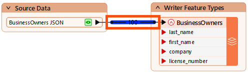
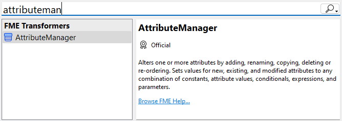
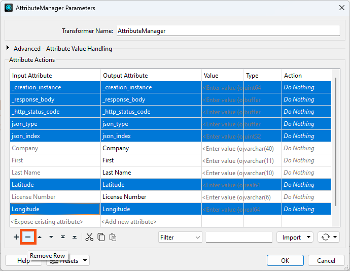
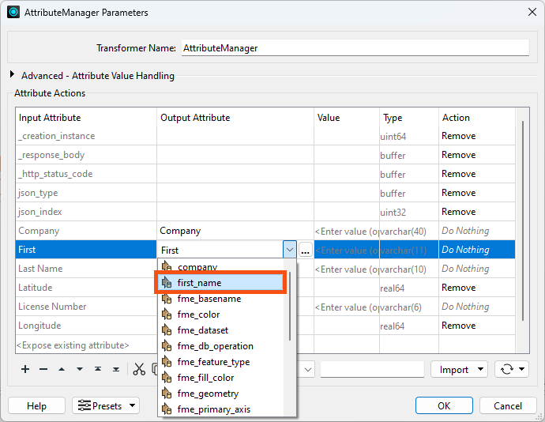
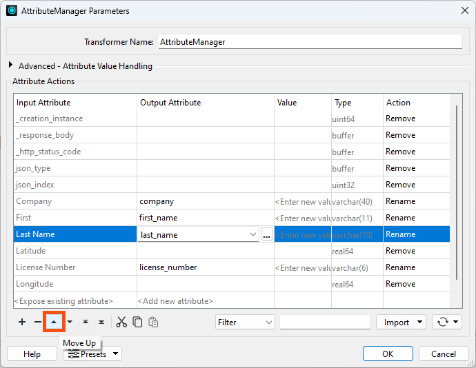
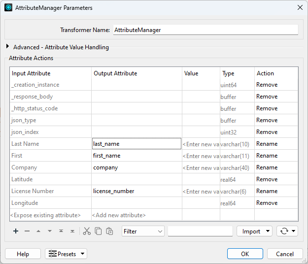
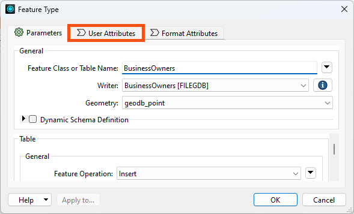
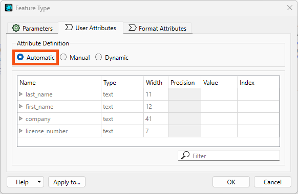
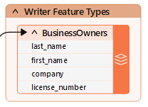

After completing this lesson, you’ll be able to:
Now that Jennifer has created a workspace that edits the web data’s schema, she has to map it, telling FME how the original and new schemas are related.
She opens the workspace in FME Workbench (2024.0 or later) and notices the red triangle icons on her writer feature type attributes:
FME uses colored ports to indicate the status of schema mapping. In this case, the red port means an attribute exists on the writer feature type but not on the features entering the feature type. An attribute with a red port will not cause an error when the workspace is run, but it will not have any values in the written data.
To ensure her new first_name attribute gets the same values as her existing First attribute, we must map the new schema onto the old one. We can use the AttributeManager transformer for that.
Colored ports are used to aid schema mapping visually:
- Green ▶: this attribute is connected.
- Yellow ▶: this reader feature type attribute is not mapped to any writer feature type; therefore, this attribute will not be in the output.
- Red ▶: this writer feature type attribute is not connected. While it exists in the schema, it will not receive any data and, therefore, will not have any values in the written data.
Jennifer clicks the black feature connection line between the reader feature type and the GeometryFilter to select it. She observes the light blue highlight indicating the line is selected.

Feature connection line: these lines connect feature types and transformers on the canvas and control the flow of features from left to right.
When any object on the canvas is selected, using Quick Add will automatically connect the new object. With the feature connection line selected, Jennifer types in “AttributeManager.” The Quick Add dialog appears, letting her search for transformers, readers, and writers. She finds the AttributeManager and presses Enter to add it.

The AttributeManager appears on the canvas. Jennifer double-clicks it to open its Parameters dialog.

All transformers have parameters that control how they operate. These parameters are unique to each transformer. The parameters button is also color-coded. Red means that you must set parameters, yellow means that FME will use default settings but have yet to review them, and blue means that you've set or reviewed them.
The AttributeManager parameters are a table that defines how to modify attributes. It allows you to create new attributes, edit existing attribute names, change their order, and set their values.
Jennifer plans to use this transformer to change incoming features so their schema matches the writer feature type.
First, she Ctrl (or Cmd) + clicks the attributes she'd like to remove (_creation_instance, _response_body, _http_status_code, json_type, json_index, latitude, and longitude) and clicks the Remove Row button to delete them.

Then, she renames her attributes. She clicks in the Output Attribute column for the First attribute and renames it “first_name.” She can click the drop-down to choose from writer feature type attribute names, or type it in manually:

Then, she renames the other attributes to use lowercase and underscores.
Then, she uses the Move Down and Move Up buttons to change the attribute order so that it is last_name, first_name, company, and license_number:

Her dialog looks like this:

⭐ New for FME 2023.0: the AttributeManager can now change attribute types.
She clicks OK. The attribute ports on the writer feature type now turn green, showing her schema is mapped.

In the previous lesson, we mentioned that Jennifer could use Automatic or Manual Attribute Definition mode on her writer feature type. She ended up using Manual, defining the schema she wanted, and then mapping it using the AttributeManager.
That's a valid approach, but let's look at a different way that can be faster: Automatic mode.
Jennifer double-clicks her writer feature type to open its parameters, then clicks the User Attribute tab.

The Attribute Definition mode is currently set to Manual.
Jennifer clicks Automatic, and the schema changes to match the incoming features:

The schema is the same in this case because she already mapped it using the AttributeManager. But consider: it would have also worked to change this to Automatic and use the AttributeManager without defining the destination schema in Manual mode. The only major downside is that FME has to infer the attribute types, so you need to check them. In this case, they are all text and set correctly, so it works well.
Additionally, after changing to Automatic mode, if Jennifer wants to make changes, she can click Manual again.
However, she leaves it in Automatic mode and clicks OK.
She notes that the colored arrows disappear from the feature type's attributes:

She doesn't run the workspace yet; she'll use a technique called partial runs to do that in the next lesson.
If you'd like to test Automatic mode, try making a change to your AttributeManager parameters. Rename an attribute, for example. You will see the change reflected in the writer feature type schema automatically.
Make sure you have followed along with Jennifer’s steps.